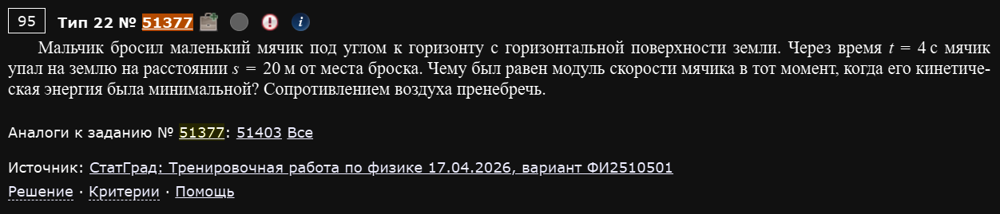
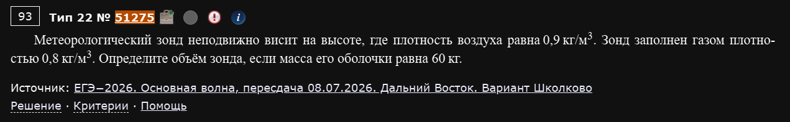
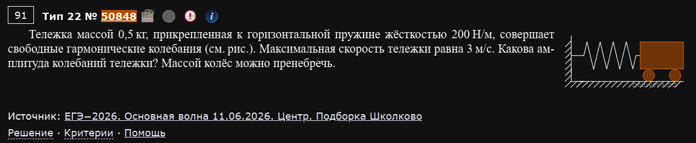
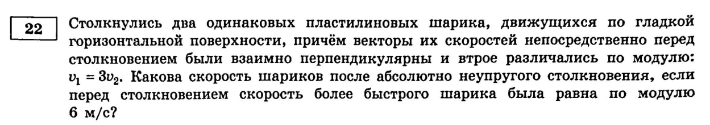
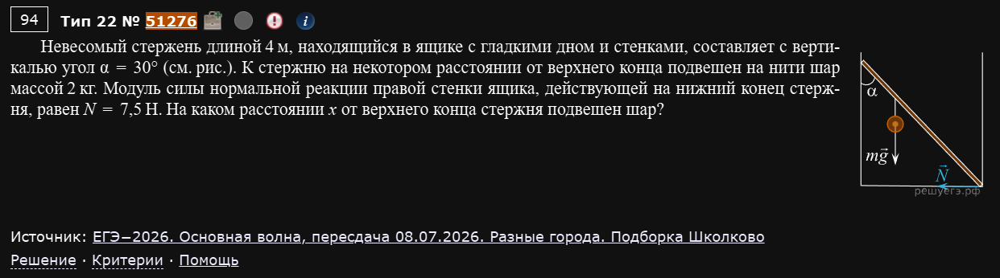
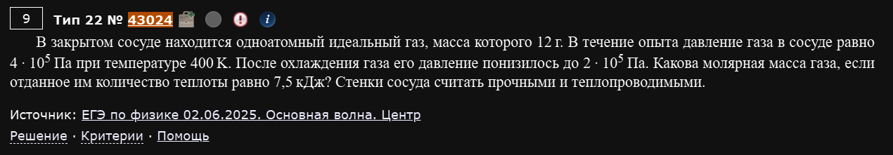
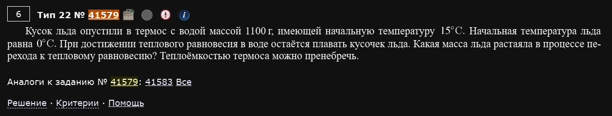
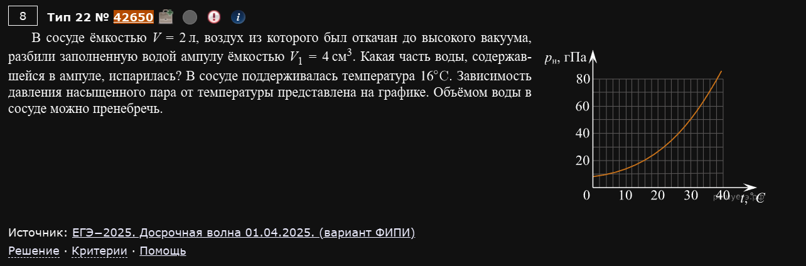

№22. Расчётная задача (Механика, МКТ и термодинамика)
Первая полноценная расчётная задача второй части: нужен не только числовой ответ, но и полное решение — законы и формулы, которые вы применяете, математические преобразования и рисунок, если он нужен для понимания. Оценивается от 0 до 2 баллов: 2 балла — если правильно записаны все нужные законы/формулы и получен верный численный ответ; 1 балл — если законы записаны верно, но из-за арифметической ошибки или недостающего элемента ответ не сошёлся (или наоборот: если решение не доведено до конца, но всё написанное верно); 0 баллов — если решение не соответствует ни одному из этих случаев. В отличие от №21, здесь оценивают в первую очередь физико-математическую состоятельность решения, а не полноту словесных пояснений — но каждый использованный закон всё равно должен быть виден в решении (записанной формулой), а не подразумеваться.
Механика
Пример 1) (Решу ЕГЭ №51377 — СтатГрад: тренировочная работа по физике 17.04.2026, вариант ФИ2510501)

Мальчик бросил маленький мячик под углом к горизонту с горизонтальной поверхности земли. Через время t = 4 с мячик упал на землю на расстоянии s = 20 м от места броска. Чему был равен модуль скорости мячика в тот момент, когда его кинетическая энергия была минимальной? Сопротивлением воздуха пренебречь.
Кинетическая энергия тела, брошенного под углом, минимальна там, где минимален модуль скорости — а это происходит в верхней точке траектории, где вертикальная составляющая скорости обращается в ноль (по симметрии параболического движения). Значит, в этой точке скорость тела — чисто горизонтальная, и она равна горизонтальной составляющей скорости на протяжении всего полёта (по горизонтали ускорения нет, эта составляющая не меняется).
Горизонтальная составляющая скорости находится прямо из кинематики равномерного движения по горизонтали:
Поскольку в верхней точке траектории , полная скорость там равна именно этой горизонтальной составляющей.
Ответ: v = 5 м/с.
Пример 2) (Решу ЕГЭ №51275 — ЕГЭ-2026, основная волна, пересдача 08.07.2026, Дальний Восток, вариант Школково)

Метеорологический зонд неподвижно висит на высоте, где плотность воздуха равна 0,9 кг/м³. Зонд заполнен газом плотностью 0,8 кг/м³. Определите объём зонда, если масса его оболочки равна 60 кг.
Зонд неподвижен — значит, сила Архимеда, действующая на него со стороны воздуха, уравновешена суммарной силой тяжести (оболочки и газа внутри):
Сокращаем и выражаем объём:
Ответ: V = 600 м³.
Пример 3) (Решу ЕГЭ №50848 — ЕГЭ-2026, основная волна 11.06.2026, Центр, подборка Школково)

Тележка массой 0,5 кг, прикреплённая к горизонтальной пружине жёсткостью 200 Н/м, совершает свободные гармонические колебания. Максимальная скорость тележки равна 3 м/с. Какова амплитуда колебаний тележки? Массой колёс можно пренебречь.
Циклическая частота пружинного маятника определяется массой и жёсткостью:
Максимальная скорость при гармонических колебаниях связана с амплитудой и циклической частотой соотношением (это следует из того, что , а скорость достигает максимума ). Отсюда:
Ответ: A = 0,15 м = 15 см.
Пример 4) (Демидова 2026, вариант 1)

Столкнулись два одинаковых пластилиновых шарика, движущихся по гладкой горизонтальной поверхности, причём векторы их скоростей непосредственно перед столкновением были взаимно перпендикулярны и втрое различались по модулю: . Какова скорость шариков после абсолютно неупругого столкновения, если перед столкновением скорость более быстрого шарика была равна по модулю 6 м/с?
Столкновение абсолютно неупругое (шарики слипаются) — применяем закон сохранения импульса для системы двух шариков, причём в векторной форме, так как скорости не коллинеарны:
Так как векторы и взаимно перпендикулярны, модуль их суммы находится по теореме Пифагора:
Приравнивая к модулю правой части () и сокращая на :
По условию м/с (быстрый шарик), а м/с (медленный):
Ответ: u ≈ 3,2 м/с.
Перпендикулярные скорости — складывайте импульсы как векторы, не как числа
Частая ошибка — сложить или вычесть модули скоростей напрямую. Если векторы импульсов не коллинеарны, складывать нужно именно векторно; при взаимно перпендикулярных направлениях это удобно делает теорема Пифагора для модуля суммы, как в примере выше. Если бы шарики двигались навстречу друг другу (коллинеарно), пришлось бы просто складывать/вычитать проекции на одну ось — вот тогда обычная алгебраическая сумма и сработала бы.
Пример 5) (Решу ЕГЭ №51276 — ЕГЭ-2026, основная волна, пересдача 08.07.2026, разные города, подборка Школково)

Невесомый стержень длиной 4 м, находящийся в ящике с гладкими дном и стенками, составляет с вертикалью угол α = 30°. К стержню на некотором расстоянии от верхнего конца подвешен на нити шар массой 2 кг. Модуль силы нормальной реакции правой стенки ящика, действующей на нижний конец стержня, равен N = 7,5 Н. На каком расстоянии x от верхнего конца стержня подвешен шар?
По рисунку верхний конец стержня опирается на левую стенку ящика (реакция там — чисто горизонтальная сила, стенка гладкая), а нижний конец находится в углу, где сходятся правая стенка и дно — там на стержень действуют сразу два взаимно перпендикулярных отклика: горизонтальный от правой стенки (дан по условию) и вертикальный от дна.
Стержень невесом, значит для него должна выполняться не только сила, но и момент сил — сумма моментов всех сил относительно любой точки равна нулю. Удобнее всего взять точку в нижнем углу (там, где стержень опирается на дно и правую стенку) — тогда неизвестная вертикальная реакция дна и сама сила (которая действует как раз в этой точке) не создают момента относительно неё, и в уравнение войдут только вес шара и известная сила , приложенная в верхней точке.
Пусть длина стержня м, шар подвешен на расстоянии от верхнего конца — то есть на расстоянии от нижнего угла (точки, относительно которой считаем моменты). Плечо силы тяжести шара (перпендикуляр от линии действия силы , которая направлена вертикально, до точки поворота) равно горизонтальной проекции отрезка вдоль стержня: . Плечо силы (действующей на верхнем конце горизонтально) относительно нижнего угла равно вертикальной проекции всего стержня: .
Уравнение моментов относительно нижнего угла:
Выражаем :
Подставляем числа ( кг, м/с², ):
Ответ: x ≈ 1,4 м.
Почему выбор точки для моментов важен
Взяв моменты именно относительно нижнего угла (а не, скажем, верхней точки), мы автоматически исключили из уравнения сразу две неизвестные реакции, действующие именно там (силу N и вертикальную реакцию дна) — они обе приложены в этой точке и потому не создают относительно неё момента. Это стандартный приём для стержней/балок с несколькими опорами: выбирайте точку так, чтобы в ней сходилось как можно больше неизвестных сил.
МКТ и термодинамика
Пример 1) (Решу ЕГЭ №43024 — ЕГЭ по физике 02.06.2025, основная волна, Центр)

В закрытом сосуде находится одноатомный идеальный газ, масса которого 12 г. В течение опыта давление газа в сосуде равно 4·10⁵ Па при температуре 400 K. После охлаждения газа его давление понизилось до 2·10⁵ Па. Какова молярная масса газа, если отданное им количество теплоты равно 7,5 кДж? Стенки сосуда считать прочными и теплопроводными.
Сосуд закрытый и прочный — значит, объём газа не меняется, процесс изохорный. По закону Шарля ( при ) находим конечную температуру:
Так как объём не меняется, газ работы не совершает (), и по первому закону термодинамики всё отданное количество теплоты идёт на изменение внутренней энергии: . Для одноатомного идеального газа внутренняя энергия , поэтому:
Выражаем молярную массу:
Считаем числитель: ; ; .
Ответ: M = 4 г/моль (это гелий).
Пример 2) (Решу ЕГЭ №41579)

Кусок льда опустили в термос с водой массой 1100 г, имеющей начальную температуру 15°C. Начальная температура льда равна 0°C. При достижении теплового равновесия в воде остаётся плавать кусочек льда. Какая масса льда растаяла в процессе перехода к тепловому равновесию? Теплоёмкостью термоса можно пренебречь.
Ключевая фраза — «остаётся плавать кусочек льда»: это означает, что не весь лёд растаял, то есть система пришла к равновесию, в котором ещё сосуществуют лёд и вода — а значит, конечная температура равновесия равна ровно 0°C (пока есть хоть немного нерастаявшего льда, температура смеси не может подняться выше точки плавления).
Раз потерь тепла нет (термос идеальный), по уравнению теплового баланса всё тепло, отданное водой при остывании от 15°C до 0°C, идёт на плавление части льда:
где Дж/(кг·К) — удельная теплоёмкость воды, Дж/кг — удельная теплота плавления льда. Выражаем массу растаявшего льда:
Ответ: m ≈ 210 г.
"Ещё плавает лёд" — сразу даёт конечную температуру
Эта фраза (или любая её вариация — “часть льда не растаяла”, “в сосуде сохраняется смесь льда и воды”) в задачах на тепловой баланс всегда означает одно и то же: конечная температура равна температуре плавления (0°C для воды), и вам не нужно её вычислять отдельно — уравнение теплового баланса сразу пишется с известной конечной температурой.
Пример 3) (Решу ЕГЭ №42650 — ЕГЭ-2025, досрочная волна 01.04.2025, вариант ФИПИ)

В сосуде ёмкостью V = 2 л, воздух из которого был откачан до высокого вакуума, разбили заполненную водой ампулу ёмкостью V₁ = 4 см³. Какая часть воды, содержавшейся в ампуле, испарилась? В сосуде поддерживалась температура 16°C. Зависимость давления насыщенного пара от температуры представлена на графике. Объёмом воды в сосуде можно пренебречь.
Классическая задача на испарение в вакуум: вода будет испаряться до тех пор, пока либо не испарится вся, либо пар в сосуде не станет насыщенным (в зависимости от того, что наступит раньше). Чтобы понять, какой из двух случаев реализуется, нужно сравнить всю массу воды в ампуле с максимально возможной массой пара, которая способна насытить сосуд данного объёма при данной температуре.
По графику, давление насыщенного пара при C составляет примерно гПа Па.
Максимальную массу пара, которая может находиться в сосуде объёмом при температуре и давлении (то есть массу, соответствующую состоянию насыщения), находим из уравнения Менделеева — Клапейрона:
Подставляем числа ( м³, кг/моль, К):
Масса воды в ампуле: кг г — это заметно больше, чем г, необходимая для насыщения сосуда. Значит, испарится не вся вода, а ровно столько, сколько нужно для насыщения пара, то есть ; искомая доля:
Ответ: испарится примерно 0,7% воды (доля ≈ 0,0068).
Сначала проверьте, хватит ли пространства для насыщения
Прежде чем считать долю, всегда сравнивайте общую массу воды с максимально возможной массой насыщенного пара для данного объёма и температуры. Если бы воды в ампуле было МЕНЬШЕ, чем (например, очень маленькая капля в большом сосуде), она испарилась бы вся целиком, и пар остался бы ненасыщенным — тогда ответом было бы “100% испарилось”, а вычислять по графику вообще не понадобилось бы.